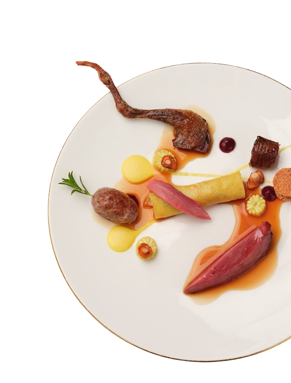
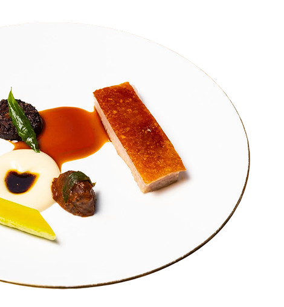
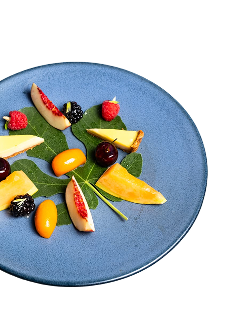
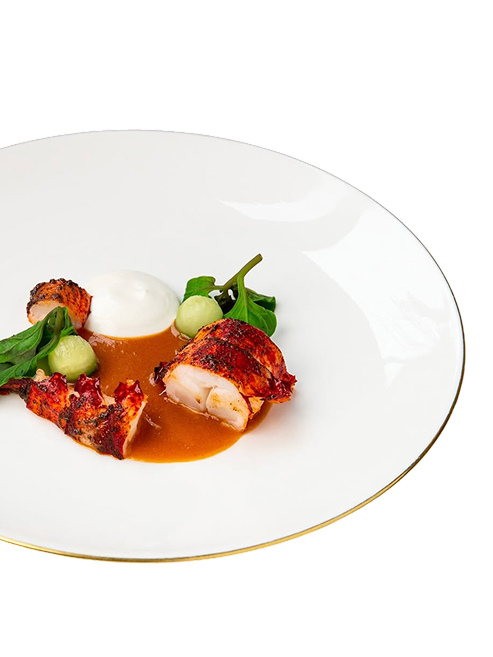

Where British Produce Gets Its Due
A tasting menu, two Michelin stars, one historic town hall.
The Clove Club is a relaxed fine dining restaurant set in the historic rooms of the Grade II-listed Shoreditch Town Hall, London. Led by Chef-Patron Isaac McHale, we serve a seasonal tasting menu of modern, elegant dishes, rooted in technique but stripped back to their essential elements. We place a great emphasis on sourcing the best produce the British Isles has to offer, showcased in dishes inspired by Isaac's culinary memories and travels.




“The Clove Club somehow feels precise, relaxed, and deeply confident — like a kitchen that no longer needs to show off because it already knows exactly how good it is.”
“Dining here makes me believe in the fine culinary arts again - unpretentious hard work that fruits delicious food.”
Reserve your table
Tasting menus served Monday-Wednesday
A seasonal tasting menu, served in the historic rooms of Shoreditch Town Hall.